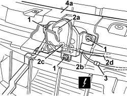
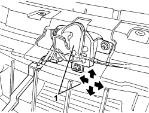

7025A34 BONNET LID LOCK (ONE) - R+R OR REPAIR
- Path
- Procedures > 70 FITTINGS > 7025 COMPARTMENT COVERS > 7025A BONNET LID > 7025A34 BONNET LID LOCK (ONE) - R+R OR REPAIR
- Kind
- repair procedure (removal / refitting; the operation number is the code)
- Applies to
- all engines; all production periods
- Interactive page
- https://sloeber94.github.io/elrnDB-aBrrSpdr/en/#/946002567
Applies to: all engines; all production periods
 Removing
Removing
 Refitting
Refitting- Open the bonnet.
1. Undo the upper bolts fixing the front bumper.

Applies to: all engines; all production periods
1. Undo the lock retaining nuts.
2. Move lock (2a) slightly aside and disconnect retainers (2b) and (2c) from operating cable (2d).
3. Detach the electrical connection.
Description | Connector | |
|---|---|---|
3 | BONNET OPEN SWITCH |
4. Recover catch (2a) by moving the upper edge (4a) of the bumper slightly.

Applies to: all engines; all production periods
Refitting
Removing- Check that the lock is not damaged.
- Slightly move the upper edge of the bumper and position the lock.
- Connect the control cable to the lock retainers.
- Screw in the lock nuts without tightening them.
- Tighten the upper bolts fixing the front bumper.
Component | Fastening | dia | Value (daNm) | Validity |
|---|---|---|---|---|
FRONT BUMPER | Bolt | M6x22 | 0.7 ÷ 1.1 |
1. Adjust the position of the lock.

Applies to: all engines; all production periods
- Tighten the lock nuts to the recommended torque.
Component | Fastening | dia | Value (daNm) | Validity |
|---|---|---|---|---|
BONNET LID LOCK | Nut | M6 | 0.7 ÷ 1.1 |
- Check that the bonnet opens and closes properly.